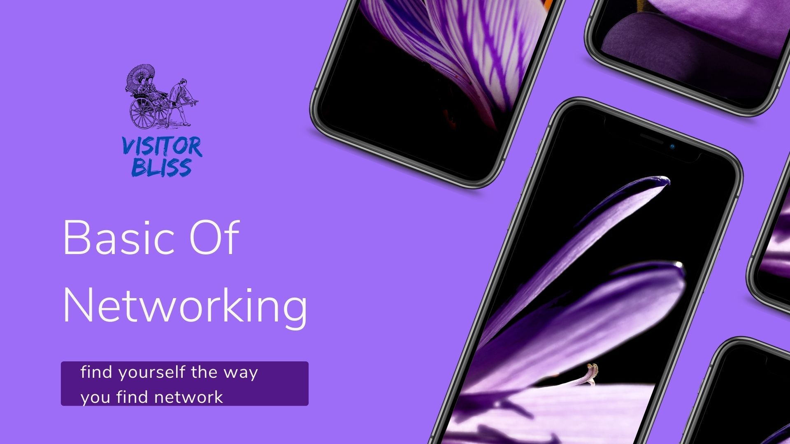

MAC address
March 27
A media access control address(MAC) is a unique identifier assigned to a network interface controller for use within a network segment as a network address in communications. This is commonly used in most IEEE802 network technologies, including Ethernet, Wi-Fi and Bluetooth. But how it can be our physical address. In our daily life physical address mean your address, which is all about where you come from, which place, region, area or so on. I would assume that your physical address will be any place where you were present at any given time. Just imagine at any moment when your friends come to you and ask you, hi buddy, can give me your address and you’ll be like yeah my home address is 3C-95–09–01-FE. Everyone’s response at that moment would be like what we’re asking you where you are physically present and you be like yeah it’s my MAC address you have to just trace it. I think this is the future, in this current period when privacy is our major concern and we know how valuable it is nowadays. where Mozilla(Firefox) is the only which is giving privacy and presenting our data. But along with that, we should have basic knowledge about MAC address also check out visitor bliss
Basic about networking
March 28
The network is simply a way for machines/computers to communicate, On a physical level, it consists of all machines that you want to connect and the devices that you use to connect them. Individual machines are connected either with a physical connection (a category 5 cable going into a network interface card, or NIC) or wirelessly. To connect multiple machines together, each machine must be connected to a hub or a switch. These hubs/switches must be connected together. In larger networks, each sub-network is connected to the others by a router check out visitor bliss